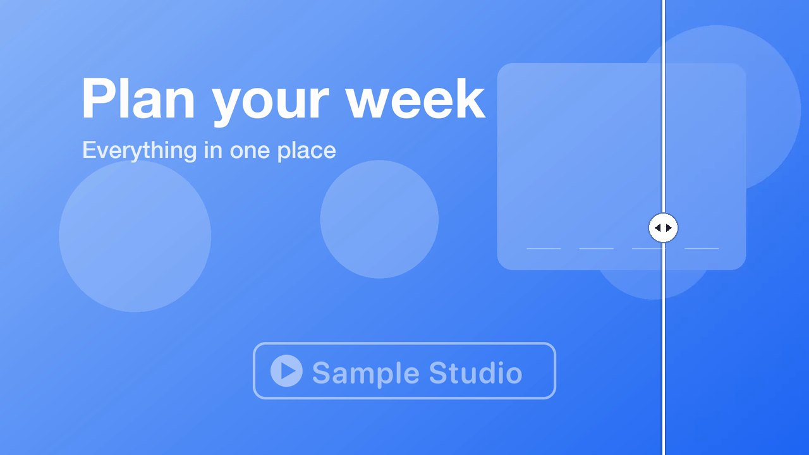
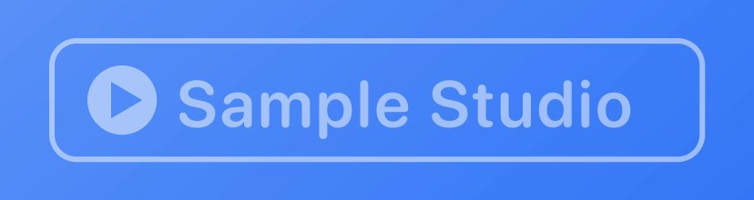
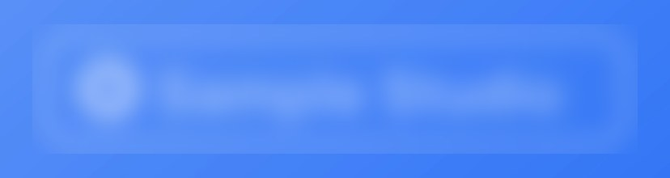
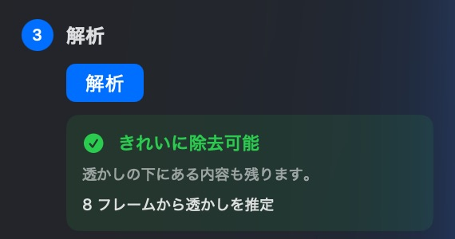
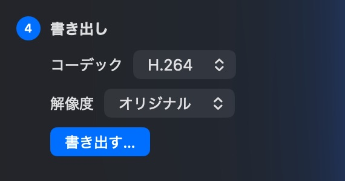
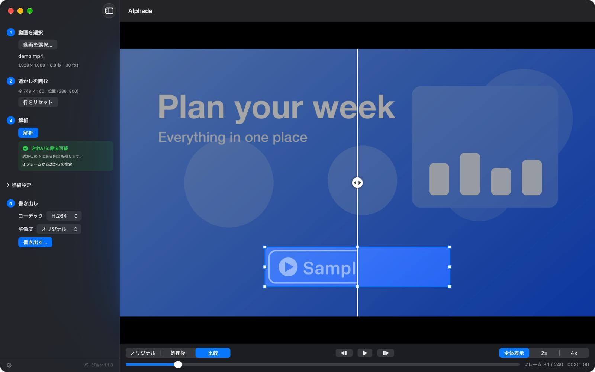

透かしを囲む
動画を開き、透かしを囲むようにドラッグして枠を描きます。
Alphade は動画の半透明の透かしを取り除き、下にあった元の映像を復元します。すべて Mac 上で完結します。
Mac 版をダウンロード無料 · macOS 26 以降

透かしあり Alphadeぼかさずに復元
透かしをぼかすと、にじんだ跡が残ります。Alphade は透かしが各フレームにどう重ねられたかを割り出して逆算するので、下にあった映像がきれいに戻ります。


使い方

動画を開き、透かしを囲むようにドラッグして枠を描きます。

Alphade が動画全体を解析し、どこまで復元できるかを教えてくれます。

きれいになった動画を H.264 か HEVC で、元のサイズのまま、または縮小して書き出します。
書き出す前に
オリジナルと結果を左右に並べて比較したり、1 フレームずつ確認したり、4 倍まで拡大したりできます。変わるのは枠の中だけで、それ以外の映像と音声はそのままです。

何もアップロードせず、アカウントの作成も不要です。Alphade はデータを一切収集しません。詳しくはプライバシーポリシーをご覧ください。
解析もプレビューも書き出しも無料です。購入の必要も、試用版の制限も、サブスクリプションもありません。ダウンロードしたファイルは Developer ID で署名され、Apple の公証を受けています。
位置が固定された半透明の透かしに最も適しています。対応している動画はこちら
Mac 版をダウンロードHomebrew でもインストールできます： brew install --cask vulcanshen/tap/alphade